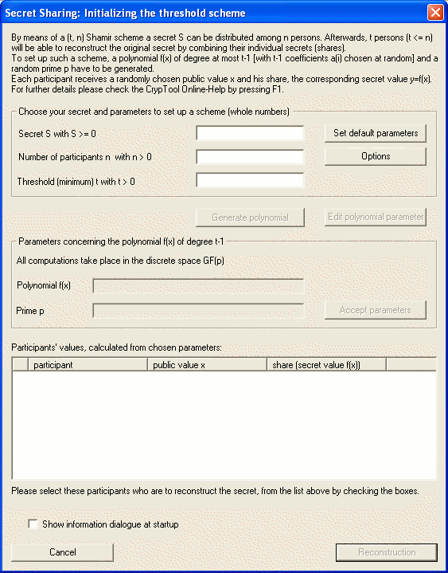
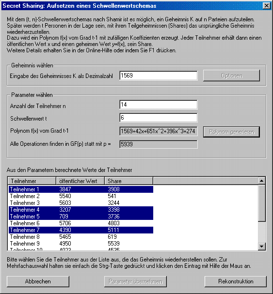

This dialog can be achieved via the menu Individual Procedures \ Secret-Sharing-Demo.
It demonstrates the (t, n) threshold scheme invented by Adi Shamir by offering possibilities to freely choose the necessary parameters and to select those participants who want to cooperate in reconstructing the secret.

First of all, you have to enter your secret S within the group box labeled "Choose your secret and parameters to set up a scheme". In addition, the number of participants n and your threshold t is required. All numbers should be entered as decimals. By clicking the button Options, a seperate dialog appears. It enables you to change the maximum number of participants and the upper limit to the prime number p. In case you can't think of any concrete values or if you just like to gain a first impression of the scheme's functionality, CrypTool fulfills the task of generating default parameters for you.
Right in the middle of the dialog all remaining parameters that are neccessarily needed to set up a Shamir scheme are displayed. By clicking the button Generate polynomial, CrypTool (as the dealer of the scheme) generates at random a prime p that determines the field in which all calculations take place. Additionally, a polynomial of degree t-1 with randomly chosen coefficients is constructed. Even if a polynomial is already generated, you are still able to modify this part of the scheme. Simply click the button Edit polynomial parameters and the corresponding dialog opens.
If you now accept these parameters, the list control displays all participants. CrypTool has randomly chosen a public value x from GF(p) for each of the participants. Furthermore, the polynomial has been evaluated for all these values. Consequently, you are presented a list of all participants and their shares.
A group of participants can be selected by checking the boxes in front of the desired entries.

If you wish to reconstruct your secret, you have to left-click the button Reconstruction. A new dialog then opens to display the reconstructed secret and the selected participants.